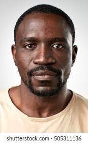
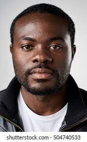

CALF RAISING
All births take place at
New Sweden Dairy. Calves receive colostrum for their first feeding.

MILKING
The fresher the milk, the higher the quality. Modern practices help us preserve that quality.

FEED
We source ingredients from local farmers to make a balanced mix that meets our cows’ needs.
HERD HEALTH &
REPRODUCTION
The good health and fertility of our cows is very important to us. We utilize preventative vaccinations in addition to observing the cows several times per day to ensure prompt treatment of any health need.

MAINTENANCE
All births take place at
New Sweden Dairy. Calves receive colostrum for their first feeding.